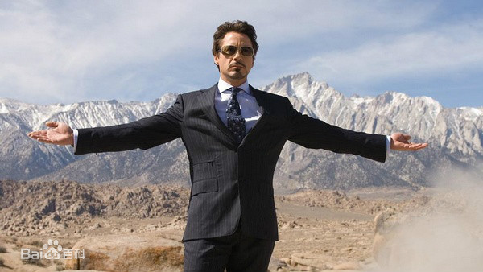

英雄联盟 |
|
|
钢铁侠简介:
托尼·史塔克（小罗伯特·唐尼饰）出生在纽约一个富豪家庭，从小衣来伸手饭来张口的他，并未像所有的纨绔子弟那般只知道享乐胡闹。天生聪慧的史塔克却是个出奇的天才，17岁毕业于麻省理工大学电力工程系，并以傲人的成绩成功找到了自己的社会定位——其家族企业史塔克军火公司的新老板。 父母的不幸去世反而更激发了托尼事业的前进动力。21岁时便开始掌控数百亿财产的他，逐渐确立了史塔克公司作为美军第一军火供应商的雄厚地位。不过托尼傲慢自大的性格以及为达到目的不择手段的做法常常为自己找来很多麻烦。 还好，他身边还有一个精明能干、性感迷人的女助手维吉尼亚·波茨（格温妮斯·帕特洛饰）时刻给自己无微不至的关怀和帮助。 但不久后的一次绑架事件彻底改变了托尼·史塔克的一生。当托尼带领一班手下和军方观察员在荒无人烟的地方测试自己最新研制的成果时，不料遭遇恐怖分子的袭击。 最终，混乱中被炮弹碎片击中心脏的托尼醒后发现胸口多了个奇怪的装置，正是这个仪器维系着自己的生命。 原来是同为人质的英森博士用一块汽车电磁铁吸住了他体内的弹片，保住了托尼·史塔克的性命，当然，救活他的恐怖分子要求托尼·史塔克为他们制造出威力更加巨大的武器。好汉不吃眼前亏，聪明的史塔克更不会坐以待毙。 于是，他在英森帮助下利用恐怖分子为其提供的粗糙设备和原材料，在暗无天日的地下基地里为自己造出了钢铁盔甲，在与恐怖分子的火拼当中，英森博士为史塔克争取时间逃跑不幸身亡，但却使逃脱的托尼改变了自己的以制造军火拯救世界的想法。 于是，他改进了钢铁盔甲，制造了另一块聚变能源，成为真正的钢铁侠。 俄巴迪亚·斯坦（杰夫·布里奇斯饰）这个觊觎史塔克的富豪生活已久的坏家伙按捺不住，在史塔克军火公司里大兴波澜，与恐怖分子头目秘密交易。 从其手中获得史塔克逃出恐怖分子基地时所损坏的盔甲残骸并在一班科学家的帮助下，夺取了托尼的聚变能源将钢铁盔甲改进用在了自己身上。至此故事中的头号坏蛋终于有了为所欲为的理由和底气。 托尼只能靠着旧的电磁石心脏同斯坦战斗。最后波茨启动了电弧的所有能源，将斯坦打败。在第二天的新闻发布会上，托尼宣布，I am Iron Man.（我是钢铁侠） [4] 。  |
|
| 出自STL英雄简介 | |